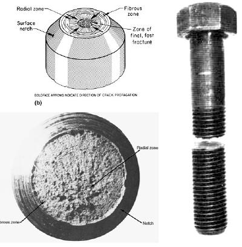
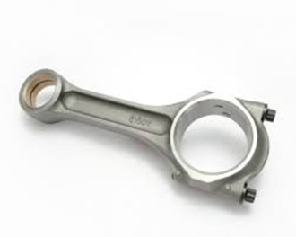
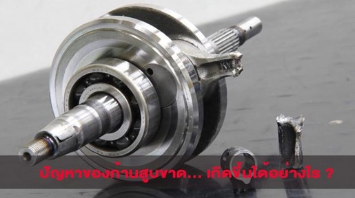
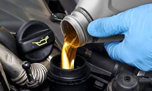
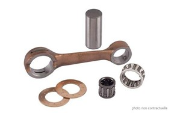

APE112 SEC 1
FRACTUTURE
การแตกหัก (FRACTURE)
คือ การแตกหัก หรือ แยกตัวของวัสดุ ทำให้วัสดุของแข็งเกิด การแตกเป็น 2 หรือ มากกว่า 2 ชนิด ภายใต้แรงกระทำทางกล กระบวนการเกิดการแตกหัก แบ่งได้เป็น 2 ส่วนคือ
คือ1.การเกิดรอยร้าวที่ผิว (Crack initiation) 2. การขยายตัวของรอยร้าวกลายเป็นรอยแตก (Crack propagation)
การแตกแบบเหนียว (Ductile fracture)
1. มีเปอร์เซ็นต์การยืด (Elongation)
2. สาเหตุเนื่องจากวัสดุได้รับ Load และ stress ที่สูงเกินไป
3. รูปร่างของรอยแตกหักที่พบมาก สำหรับโลหะอ่อน เช่น ตะกั่ว ทอง เป็นต้น จะมีคอคอด และ cup and cone fracture
การแตกหักแบบเปราะ (Brittle fracture)
1. มีการยืดตัวน้อยหรือไม่มี
2. ผิวที่เกิดรอยหักจะเรียบ และตั้งฉาก กับทิศทางของแรงดึง
3. สาเหตุที่ทำให้Zone F มีความ อ่อนแอเนื่องจาก รู (voids), หรือ สารเจือปน ทำให้เกรนเสื่อม คุณสมบัติ เป็นสาเหตุให้เกรน แยกตัวออกจากเกรนอื่น กลายเป็น รอยแยกยาวขึ้น
สาเหตุที่ทำ ให้วัสดุแตกแบบเปราะ
1. Temperature อนุหภูมิการใช้งานการเปลี่ยนสภาพจากเหนียว เป็น เปราะของวัสดุเมื่อ อุณหภูมิลดลง พบมากในโลหะที่มีโครงสร้างแบบ BCC และ HCP
แต่จะไม่พบในโลหะที่มีโครงสร้าง FCC เช่น เหล็กกล้า ที่อุณหภูมิต่ำหว่า -23 °C จะมีคุณสมบัติ เปราะ(brittle) และ ที่อุณหภูมิสูงกว่า 77 °C จะมีคุณสมบัติ เหนียว (ductile)
ช่วงอุณหภูมิสั้นๆที่ทำให้เกิดการเปลี่ยนแปลง เรียกว่า ‘ductile-brittle transition temperature’
2.ความเร็วของแรงกระทำเมื่อวัสดุได้รับแรงกระทำอย่างรวดเร็วเช่น การกระแทก จะทำ ให้วัสดุที่เหนียวแตกแบบเปราะได้ส่งผล “ductile-brittle transition temperature” สูงขึ้น

ตัวอย่างการเกิด(FRACTURE)
การแตกหักของก้านสูบ
ก้านสูบ (Connecting rod) เป็นชิ้นส่วนของเครื่องยนต์ลูกสูบ เชื่อมลูกสูบเข้ากับเพลาข้อเหวี่ยงเข้าด้วยกัน ทำหน้าที่ส่งถ่ายกำลังงานจากลูกสูบไปหมุนเพลาข้อเหวี่ยง ปลายด้านเล็กนั้นจะ
ยึดติดกับสลักลูกสูบ และปลายด้านใหญ่จะยึดติดกับเพลาข้อเหวี่ยง ก้านสูบในเครื่องยนต์รถยนต์มักทำด้วยอะลูมิเนียมอัลลอย แต่ถ้าเป็นเครื่องยนต์ขนาดใหญ่ ก้านสูบจะทำด้วยเหล็กหล่อเหนียว
โดยกรรมวิธีอัดรูปหรือการหล่อทั้งชิ้น แล้วนำมาตกแต่งให้ได้รายละเอียดและรูปร่างตามต้องการ ด้ามสูบของก้านสูบถูกออกแบบให้มีพื้นที่หน้าตัดเป็นตัวไอเพื่อลดน้ำหนักและเพิ่มความแข็งแรง
ก้านสูบบางแบบจะมีรูน้ำมันที่ปลายก้านสูบด้านใหญ่ รูน้ำมันที่ว่านี้มีไว้เพื่อฉีดน้ำมันไปหล่อลื่นผนังกระบอกสูบ ก้านสูบทุกชิ้นมีน้ำหนักเท่ากัน ถ้านํ้าหนักไม่เท่ากันจะก่อให้เกิดการไม่สมดุล

ก้านสูบขาด

เป็นการแตกหักแบบเปราะ (Brittle fracture) เนื่องก้านสูบมีหน้าที่ในการต่อลูกสูบกับเพลาข้อเหวี่ยง ส่งกำลังไปที่เพลาข้อเหวี่ยงที่หมุนด้วยความเร็วที่สูง
ปัญหามักเกิดจากการที่เกิดความร้อนสูงทำให้เกิดก้านสูบนั้นขาดชำรุด และอีกสาเหตุหนึ่งของการเกิดก้านสูบขาด ก็เกิดจากการขาดน้ำมันเครื่องได้เช่นกันครับ
ซึ่งหากไม่ได้มีชั้นฟิล์มมาหล่อลื่น ก็ส่งผลให้ลูกสูบกับกระบอกสูบชนกัน และเกิดความร้อนที่สูงขึ้น จนเกิดการขยายตัว จึงเป็นเหตุให้ก้านสูบขาดได้
ก้านสูบขาดเกิดขึ้นจากการล๊อคของสลักลูกสูบ เพราะการหล่อลื่นไม่เพียงพอในขณะความร้อนสูง เมื่อสลักล็อคจึงส่งผลให้ก้านสูบขาดได้ในรอบสูง
การป้องกันความเสี่ยงของการเกิดก้านสูบขาด คือ การเติมน้ำมันเครื่องก็ส่งผลให้เกิดความร้อนและการเผาไหม้ได้ จึงควรเลือกใช้น้ำมันเครื่องที่มีคุณภาพสูง
และมีการเปลี่ยนถ่ายน้ำมันเครื่องตามระยะเวลาที่กำหนด เครื่องยนต์ส่วนใหญ่ ก้านสูบและลูกสูบจะสามารถถอดออกจากส่วนบนของเสื้อสูบ


และมีการเปลี่ยนถ่ายน้ำมันเครื่องตามระยะเวลาที่กำหนดและสามารถนำมาตรวจสอบการสึกหลอได้ หากมีรอยขั้นแหวนนั้นแสดงว่ามีการสึกหลอ
การตรวจสอบรอยขั้นแหวนบนผนังกระบอกสูบทำได้อย่างรวดเร็วโดยใช้เล็บมือรูดไปตามผนังกระบอกสูบ จะรู้สึกสะดุดที่รอยขั้นแหวนบนผนังกระบอกสูบ
ปัญหาก้านสูบ อาจจะดูเป็นเรื่องของคนกลุ่มหนึ่งที่ใช้เครื่องยนต์ เพราะก้านสูบถือว่าเป็นหัวใจสำคัญหนึ่งซึ่งส่งผลกับทำงานของเครื่องยนต์ของรถมากอยู่
การเลือกซื้อก้านสูบมีข้อสำคัญ ซึ่งจะต้องสังเกตุลักษณะของรูทางเข้าของน้ำมันหล่อลืนที่จะส่งน้ำมันเข้าไปยังบูสทองเหลืองของสลักลูกสูบ
ซึ่งตาทฦษฎีนั้นน้ำจะไหลจากที่สูงไปที่ต่ำ โดยน้ำมันจะถูกฉีดขึ้นไปจากใต้ลูกสูบ เเล้วไหลกลับลงมาดังนั้นรูน้ำมันที่จะเอื้อให้น้ำเข้าได้มากที่สุด
ควรจะอยู่ช่วงด้านบนเเต่เนื่องจากถ้ามีก้านรูน้ำมันอยู่ตรงกลางจุดสูงสุด อาจทำให้บริเวณปลายก้านมีความเเข็งเเรงลดน้อยลง
ก้านเดิมเเละก้านเเต่งควรมีตำเเหน่งหรือองศาที่เหมาะสมกับการไหลเข้าของน้ำมันหล่อลื่น และสิ่งสำคัญก็คือไม่ควรทำการเจาะรูด้วยตนเอง
เพื่อที่จะหล่อลื่นน้ำมันให้เพิ่มมากขึ้น อาจจะทำให้เกิดการผิดเพี้ยนไปได้ และมีอายุการใช้งานในระยะเวลาที่สั้นลงกว่าปกติ